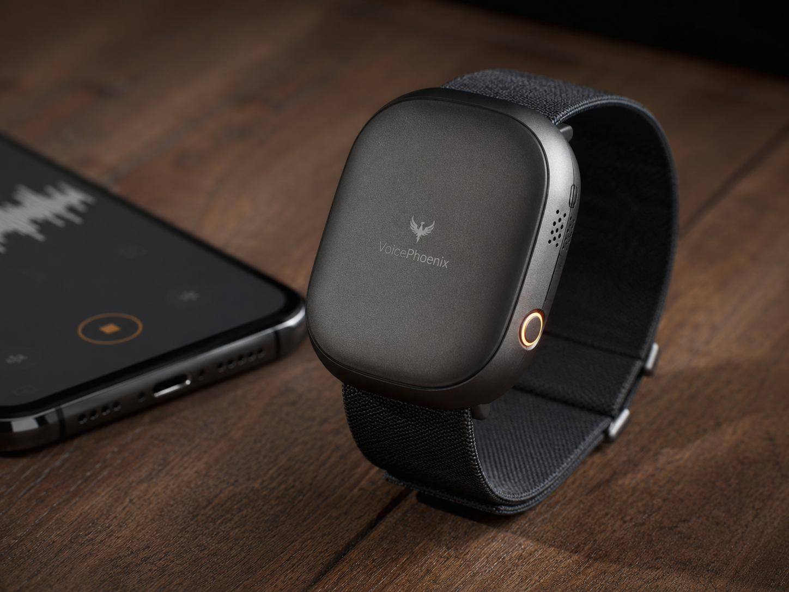
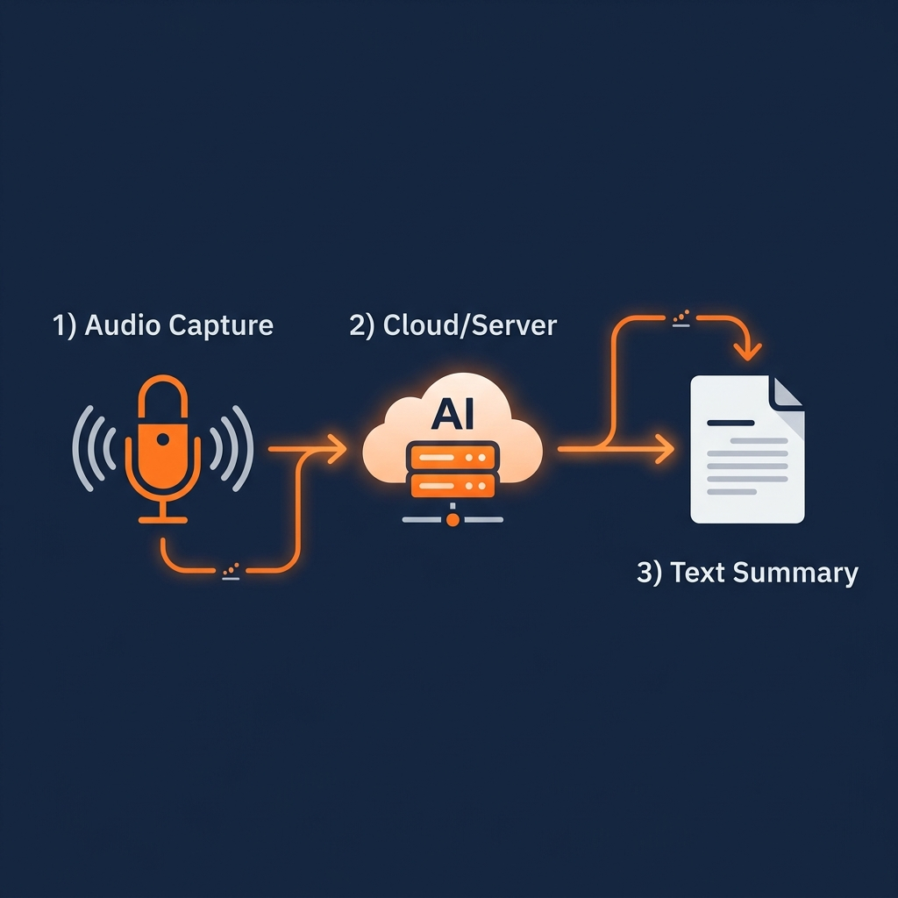
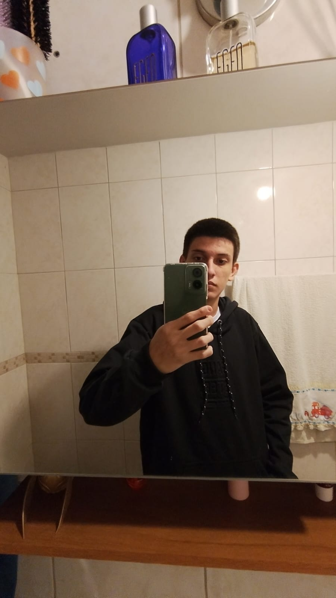

O VoicePhoenix é um wearable cognitivo que captura suas conversas em tempo real e usa Inteligência Artificial para gerar resumos inteligentes — para que você nunca mais perca um detalhe importante.


O VoicePhoenix nasceu da necessidade de registrar e organizar informações que recebemos ao longo do dia em reuniões, aulas e conversas importantes.
É um dispositivo compacto e elegante que você carrega consigo. Ele captura o áudio ambiente, transcreve tudo automaticamente usando o modelo Whisper da OpenAI e, em seguida, processa o texto com o DeepSeek — uma LLM local — para gerar resumos estruturados, pontos-chave e itens de ação.
Tudo acontece de forma local e segura, sem depender de serviços em nuvem. Suas conversas permanecem privadas, e os resumos ficam acessíveis através de um dashboard intuitivo.
Saiba MaisÁudio capturado via I2S com DMA no ESP32-C3, otimizado para baixo consumo de energia com buffer em SD card.
Processamento completo em servidor nuvem: transcrição com Whisper e análise semântica com DeepSeek.
Todas as conversas são processadas e armazenadas localmente. Nenhum dado sai da sua rede pessoal.
Um pipeline completo de captura, transcrição e análise inteligente — tudo de forma automática e transparente.
O microfone INMP441 captura o áudio via interface I2S com DMA no ESP32-C3 SuperMini.
O áudio é enviado via WiFi (TLS/SSL) para o servidor backend local usando protocolo HTTP POST.
O OpenAI Whisper transcreve o áudio em texto de alta qualidade, rodando localmente no servidor.
O DeepSeek processa a transcrição e gera resumos, pontos-chave e itens de ação automaticamente.
Um stack moderno e robusto, unindo hardware embarcado de ponta com IA de última geração.
Microcontrolador RISC-V com WiFi/BLE, ultra-baixo consumo, ideal para wearables. Gerenciamento via FreeRTOS.
Microfone MEMS digital com interface I2S, alta sensibilidade e baixo ruído. Perfeito para captura de voz.
Buffer de áudio offline via SPI. Garante resiliência quando a conexão WiFi está indisponível.
Motor de Speech-to-Text de última geração, executado localmente para transcrição de alta qualidade em múltiplos idiomas.
LLM local que analisa transcrições e gera resumos, pontos-chave e itens de ação de forma inteligente.
API REST de alta performance com Python, banco de dados local e endpoints para upload de áudio e consulta de memórias.
Framework de desenvolvimento para o ESP32-C3, com suporte a bibliotecas como ArduinoJson e gerenciamento de partições.
Interface web responsiva para visualizar transcrições recentes, resumos e insights gerados pela IA local.
Estudantes apaixonados por tecnologia, unindo hardware e software para criar algo inovador.
Responsável pela arquitetura do sistema, desenvolvimento do firmware ESP32-C3, backend FastAPI e integração completa do pipeline de IA.

Responsável pelo design do circuito, seleção de componentes, prototipagem e testes de integração do hardware wearable.